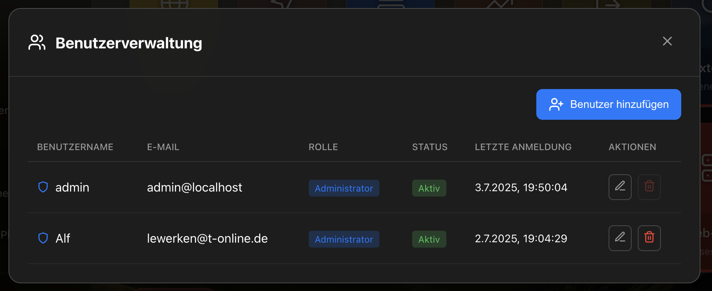
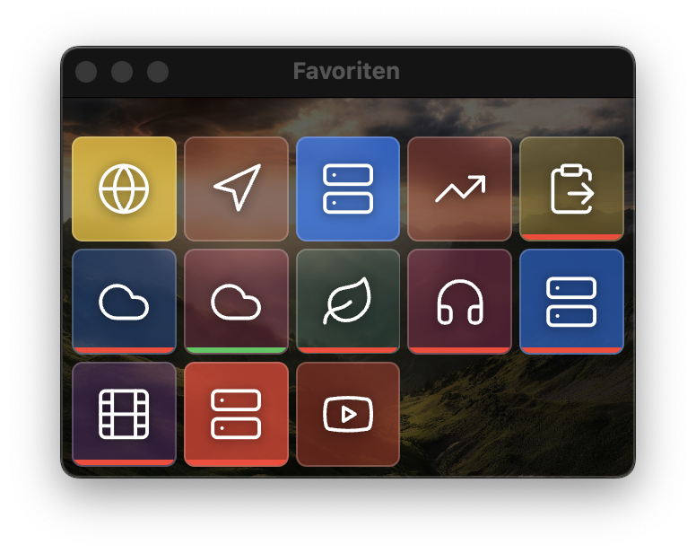

Einleitung
Web-Appliance-Dashboard
Das Schweizer Taschenmesser für die Homelab Administration
Das Web-Appliance-Dashboard ist die zentrale Verwaltungsoberfläche für alle Ihre Homelab-Services. Es vereinfacht die Administration erheblich, indem es als universelles Starterwidget und Aufrufwidget für alle Dienste in Ihrem Netzwerk fungiert.

Das Dashboard in der Desktop-Ansicht mit allen wichtigen Services auf einen Blick
Hauptfunktionen
🚀 Service-Management
Erstellen, bearbeiten und löschen Sie Services mit wenigen Klicks. Jeder Service kann individuell konfiguriert werden.
⚡ Custom Commands
Definieren Sie eigene Befehle für jeden Service, die per Mausklick ausgeführt werden können - ohne Terminal!
📊 Status-Überwachung
Sehen Sie auf einen Blick, welche Services laufen (grün) und welche offline sind (rot).
📝 Audit-Log
Vollständige Protokollierung aller Änderungen mit der Möglichkeit, jeden Zustand wiederherzustellen.
👥 Benutzerverwaltung
Verwalten Sie Benutzer und deren Zugriffsrechte auf verschiedene Services und Funktionen.
💾 Backup & Restore
Sichern Sie Ihre Konfiguration und stellen Sie diese bei Bedarf wieder her.
Erste Schritte
Installation und Erstkonfiguration
- Starten Sie das Dashboard über Ihren Browser
- Melden Sie sich mit Ihren Administrator-Zugangsdaten an
- Fügen Sie Ihre ersten Services hinzu
- Konfigurieren Sie Kategorien für eine bessere Organisation
Dashboard-Übersicht
Nach der Anmeldung sehen Sie die Hauptansicht mit allen konfigurierten Services. Jeder Service wird als Karte dargestellt, die wichtige Informationen auf einen Blick zeigt.
Services verwalten
Service-Karten
Jeder Service wird als Karte mit folgenden Informationen dargestellt:
- Name und Icon: Zur schnellen Identifikation
- Status-Anzeige: Grün = läuft, Rot = offline
- URL: Direkter Link zum Service
- Custom Commands: Schnellzugriff auf häufige Aktionen
.png)
Eine Service-Card in der Detailansicht mit grünem Status (Service läuft)
.png)
Eine Service-Card ohne Details mit rotem Status (Service läuft nicht)
Neuen Service hinzufügen
- Klicken Sie auf den "+ Service hinzufügen" Button
- Geben Sie Name, URL und optional ein Icon ein
- Wählen Sie eine Kategorie aus
- Konfigurieren Sie bei Bedarf Custom Commands
- Speichern Sie den Service
Service bearbeiten
Klicken Sie auf das Bearbeiten-Symbol einer Service-Card, um alle Einstellungen anzupassen. Alle Änderungen werden im Audit-Log protokolliert.
Service löschen
Services können über das Löschen-Symbol entfernt werden. Keine Sorge - gelöschte Services können über das Audit-Log wiederhergestellt werden!
Custom Commands
Custom Commands sind einer der mächtigsten Features des Dashboards. Sie ermöglichen es, häufig verwendete Befehle mit einem einzigen Klick auszuführen.
Beispiele für Custom Commands:
- Docker Container neu starten:
docker restart container-name - Service-Status prüfen:
systemctl status service-name - Logs anzeigen:
docker logs -f container-name - Backup erstellen:
./backup-script.sh
Command erstellen
- Öffnen Sie die Service-Bearbeitung
- Navigieren Sie zum Abschnitt "Custom Commands"
- Klicken Sie auf "Command hinzufügen"
- Geben Sie einen aussagekräftigen Namen ein
- Fügen Sie den auszuführenden Befehl ein
- Optional: Konfigurieren Sie eine Bestätigungsabfrage
Service-Status Überwachung
Das Dashboard überwacht automatisch den Status aller konfigurierten Services:
- Grüne Statusleiste: Service ist erreichbar und läuft
- Rote Statusleiste: Service ist nicht erreichbar oder offline
- Gelbe Statusleiste: Service antwortet langsam oder teilweise
Status-Prüfung konfigurieren
Für jeden Service können Sie individuell festlegen:
- Prüfintervall (Standard: 60 Sekunden)
- Timeout für Antworten
- Erwarteter HTTP-Statuscode
- Benachrichtigungen bei Statusänderungen
Benutzerverwaltung
Die integrierte Benutzerverwaltung ermöglicht es, verschiedene Zugriffsebenen zu definieren:
Die Benutzerverwaltung mit Übersicht aller angelegten Benutzer
Benutzerrollen
- Administrator: Vollzugriff auf alle Funktionen
- Power User: Kann Services verwalten, aber keine Systemeinstellungen ändern
- Benutzer: Kann nur Services aufrufen, keine Verwaltungsfunktionen
- Gast: Eingeschränkter Zugriff auf ausgewählte Services

Benutzerdetails bearbeiten und Berechtigungen festlegen
Benutzer anlegen
- Navigieren Sie zu "Einstellungen" → "Benutzerverwaltung"
- Klicken Sie auf "Neuer Benutzer"
- Füllen Sie die Benutzerinformationen aus
- Wählen Sie eine Rolle aus
- Optional: Beschränken Sie den Zugriff auf bestimmte Service-Kategorien
Audit-Log
Das Audit-Log ist ein zentrales Sicherheitsfeature des Dashboards. Hier werden alle Änderungen protokolliert und können bei Bedarf rückgängig gemacht werden.

Das Audit-Log zeigt alle Änderungen chronologisch an
Protokollierte Aktionen
- Service erstellt/geändert/gelöscht
- Benutzer angelegt/bearbeitet/entfernt
- Systemeinstellungen geändert
- Custom Commands ausgeführt
- Backup/Restore durchgeführt

Filteroptionen für verschiedene Aktionstypen
Mit dem Audit-Log arbeiten
Einträge filtern
Sie können das Audit-Log nach verschiedenen Kriterien filtern:

Filtern nach Ressourcen-Typ
- Zeitraum: Heute, letzte Woche, letzter Monat, benutzerdefiniert
- Benutzer: Aktionen eines bestimmten Benutzers
- Aktionstyp: Erstellt, geändert, gelöscht
- Ressource: Services, Benutzer, Einstellungen
Änderungen rückgängig machen

Detailansicht einer Service-Änderung mit Möglichkeit zur Wiederherstellung
- Suchen Sie den entsprechenden Eintrag im Audit-Log
- Klicken Sie auf "Details anzeigen"
- Überprüfen Sie die Änderungen
- Klicken Sie auf "Wiederherstellen" um zum vorherigen Zustand zurückzukehren
Backup & Restore
Sichern Sie regelmäßig Ihre Dashboard-Konfiguration, um im Notfall schnell wiederherstellen zu können.

Backup erstellen und Wiederherstellung durchführen
Was wird gesichert?
- Alle Service-Konfigurationen
- Benutzerdaten und Berechtigungen
- Systemeinstellungen
- Kategorien und Tags
- Custom Commands
- Dashboard-Layout Einstellungen
Backup erstellen
- Navigieren Sie zu "Einstellungen" → "Backup & Restore"
- Klicken Sie auf "Backup erstellen"
- Wählen Sie optional aus, was gesichert werden soll
- Das Backup wird als ZIP-Datei heruntergeladen
Backup wiederherstellen
- Navigieren Sie zu "Einstellungen" → "Backup & Restore"
- Klicken Sie auf "Backup hochladen"
- Wählen Sie die Backup-Datei aus
- Überprüfen Sie die Vorschau der wiederherzustellenden Daten
- Bestätigen Sie die Wiederherstellung
Kategorien verwalten
Organisieren Sie Ihre Services in Kategorien für eine bessere Übersicht.

Kategorien erstellen und verwalten
Vorteile von Kategorien
- Gruppierung ähnlicher Services
- Schnellere Navigation bei vielen Services
- Berechtigungen pro Kategorie vergeben
- Farbliche Kennzeichnung möglich
Kategorie erstellen
- Gehen Sie zu "Einstellungen" → "Kategorien"
- Klicken Sie auf "Neue Kategorie"
- Vergeben Sie einen Namen
- Wählen Sie optional eine Farbe und ein Icon
- Definieren Sie die Sortierreihenfolge
Beispielkategorien
- Netzwerk: Router, Switches, Firewall
- Media: Plex, Jellyfin, Sonarr, Radarr
- Verwaltung: Proxmox, Portainer, phpMyAdmin
- Monitoring: Grafana, Prometheus, Uptime Kuma
- Entwicklung: GitLab, Jenkins, Code-Server
Hintergrundbild anpassen
Personalisieren Sie Ihr Dashboard mit einem eigenen Hintergrundbild.

Hintergrundbild auswählen und anpassen
Einstellungsmöglichkeiten
- Bild hochladen: JPG, PNG oder WebP bis 5MB
- Transparenz: Overlay-Stärke für bessere Lesbarkeit
- Blur-Effekt: Weichzeichnung des Hintergrunds
- Positionierung: Zentriert, gestreckt oder gekachelt
Empfehlungen
- Verwenden Sie Bilder mit mindestens 1920x1080 Pixeln
- Dunkle Bilder funktionieren oft besser mit dem UI
- Abstrakte oder unscharfe Bilder lenken weniger ab
- Testen Sie verschiedene Transparenz-Einstellungen
SSH Remote Control
Führen Sie Commands nicht nur lokal, sondern auch auf entfernten Servern aus.

SSH-Verbindungen für Remote-Commands konfigurieren
Features
- Sichere SSH-Verbindungen zu Remote-Servern
- Ausführung von Commands auf entfernten Systemen
- SSH-Key basierte Authentifizierung
- Mehrere SSH-Profile verwalten
SSH-Profil einrichten
- Navigieren Sie zu "Einstellungen" → "SSH Remote Control"
- Klicken Sie auf "Neues SSH-Profil"
- Geben Sie Hostname/IP und Port ein
- Wählen Sie die Authentifizierungsmethode
- Testen Sie die Verbindung
- Speichern Sie das Profil
Remote Commands verwenden
Bei der Erstellung von Custom Commands können Sie nun wählen:
- Lokal: Command wird auf dem Dashboard-Server ausgeführt
- Remote: Command wird über SSH auf dem Zielserver ausgeführt
Responsive Design
Das Dashboard passt sich automatisch an verschiedene Bildschirmgrößen an.
Desktop-Ansicht
Die volle Funktionalität mit allen Details und mehrspaltiger Ansicht.
Optimale Darstellung auf großen Bildschirmen
Tablet-Ansicht
Angepasstes Layout für Touch-Bedienung mit größeren Buttons.

Touch-optimierte Darstellung auf dem iPad
Mobile Features
- Swipe-Gesten für Navigation
- Touch-optimierte Buttons
- Kompakte Service-Cards
- Ausklappbare Menüs
- Portrait- und Landscape-Modus
Widget-Ansicht
Die kompakte Widget-Ansicht eignet sich perfekt für kleine Bildschirme oder als Always-on-Display.
Die platzsparende Widget-Ansicht für den schnellen Überblick
Widget-Features
- Minimalistisches Design
- Nur die wichtigsten Informationen
- Schnellzugriff auf Services
- Perfekt für Monitoring-Dashboards
- Anpassbare Größe
Widget aktivieren
- Klicken Sie auf das Widget-Symbol in der Toolbar
- Wählen Sie die gewünschte Größe
- Positionieren Sie das Widget auf Ihrem Bildschirm
- Optional: Aktivieren Sie "Immer im Vordergrund"
Tipps & Tricks
Performance-Optimierung
- Status-Checks: Erhöhen Sie das Prüfintervall für weniger wichtige Services
- Lazy Loading: Aktivieren Sie verzögertes Laden für große Service-Listen
- Caching: Nutzen Sie den Browser-Cache für statische Ressourcen
Sicherheit
- HTTPS: Verwenden Sie immer verschlüsselte Verbindungen
- 2FA: Aktivieren Sie Zwei-Faktor-Authentifizierung für Administratoren
- API-Keys: Rotieren Sie regelmäßig API-Schlüssel
- Audit-Log: Überprüfen Sie regelmäßig verdächtige Aktivitäten
Workflow-Verbesserungen
- Tastenkürzel:
Strg/Cmd + K: SchnellsucheStrg/Cmd + N: Neuer ServiceStrg/Cmd + S: SpeichernESC: Dialog schließen
- Favoriten: Markieren Sie häufig genutzte Services als Favoriten
- Tags: Verwenden Sie Tags zusätzlich zu Kategorien für flexiblere Organisation
Integration
- Webhooks: Lassen Sie sich bei Service-Ausfällen benachrichtigen
- API: Nutzen Sie die REST-API für Automatisierungen
- Monitoring: Integrieren Sie externe Monitoring-Tools
Zusammenfassung
Das Web-Appliance-Dashboard ist Ihre zentrale Schaltstelle für die Homelab-Verwaltung. Mit seinen umfangreichen Features macht es die Administration von Services einfach, sicher und effizient.
Die wichtigsten Vorteile auf einen Blick:
- ✅ Zentrale Verwaltung aller Services
- ✅ Ein-Klick-Ausführung von Commands
- ✅ Vollständige Revisionssicherheit durch Audit-Log
- ✅ Flexible Benutzerverwaltung
- ✅ Responsive Design für alle Geräte
- ✅ Erweiterbar und anpassbar
Viel Erfolg mit Ihrem Web-Appliance-Dashboard!